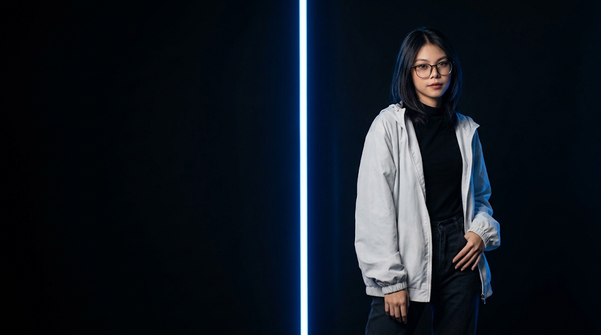
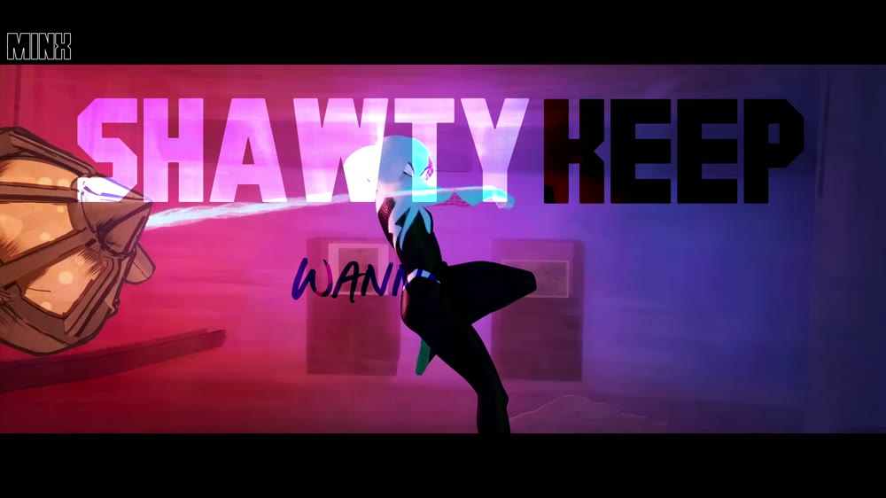
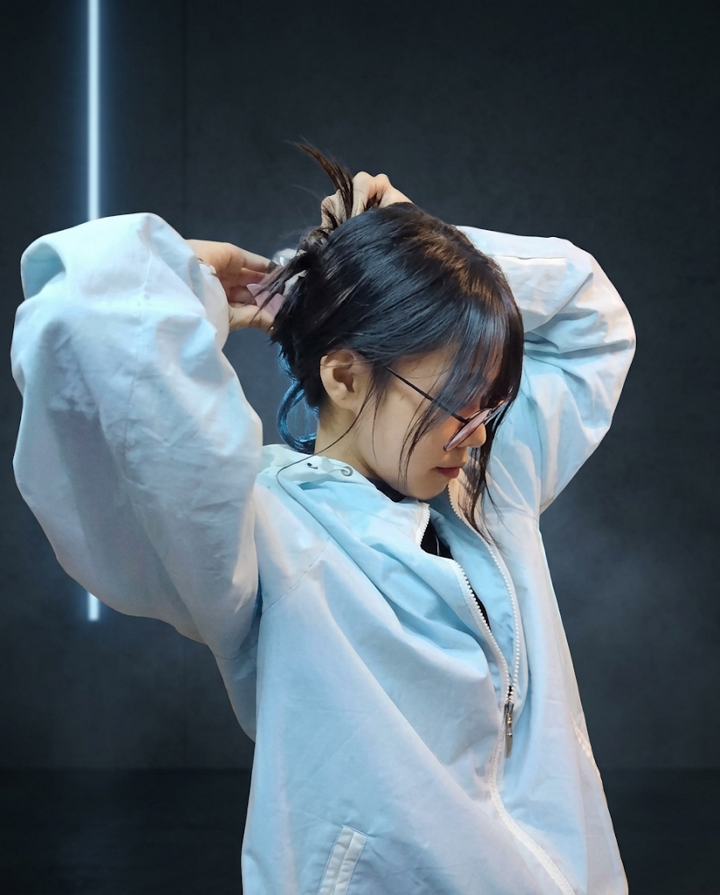
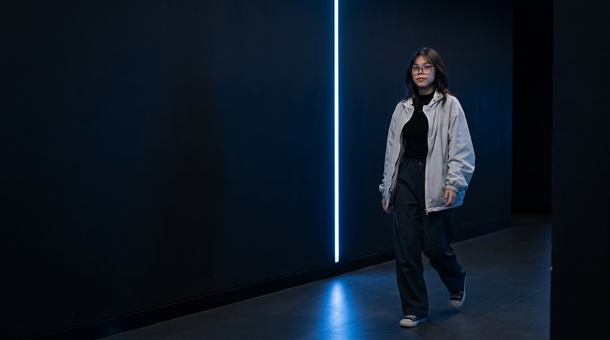
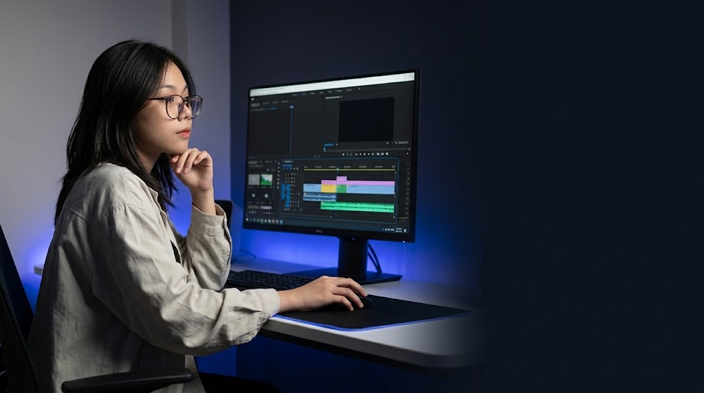

Personal edits
Content creation and video editing for my own YouTube and TikTok channels.

THE FRAME BREAK
Find the moment. Shift the feeling.
INSIDE THE EDIT

FROM FRAGMENTS TO FEELING
SELECTED WORK
A selection of product films,
creative edits & visual experiments.
THE CUT ROOM
Explore the original collection on Google Drive
THE HUMAN BEHIND THE EDIT

I’m Thawtar San.
You can call me Minx.
A freelance video editor and content creator based in Yangon, Myanmar. My path began with personal YouTube and TikTok edits, grew into full-time editing at ZYPP Camera House, and continues through freelance work.
From product footage to creative experiments, this is where I shape rhythm, feeling, and story.
Let’s make something togetherHigher National Diploma
Info Myanmar College
THE STORY SO FAR
Content creation and video editing for my own YouTube and TikTok channels.
Full-time video editor, creating and editing content for the camera house.
Freelance video editing and content creation.

Always finding
the next perspective.

THE CRAFT
Video editing, content creation, and thumbnails. A focused toolkit for shaping each piece into a complete story.
COMMUNICATION / CONSISTENCY / CREATIVITY